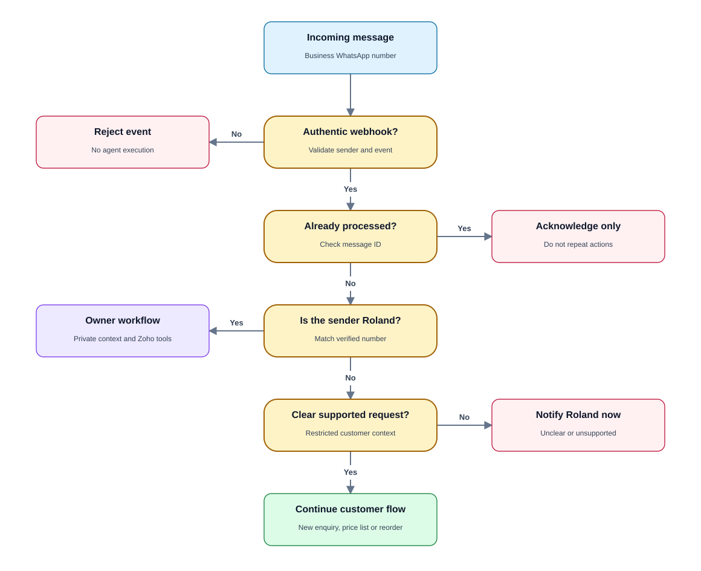
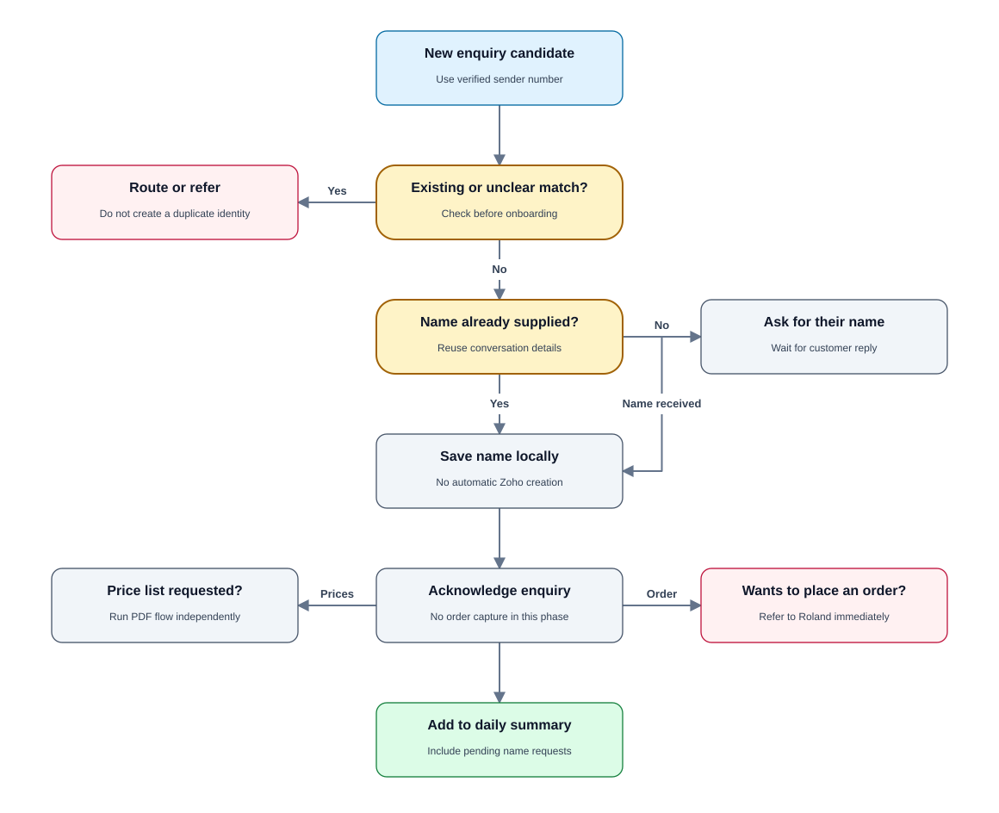
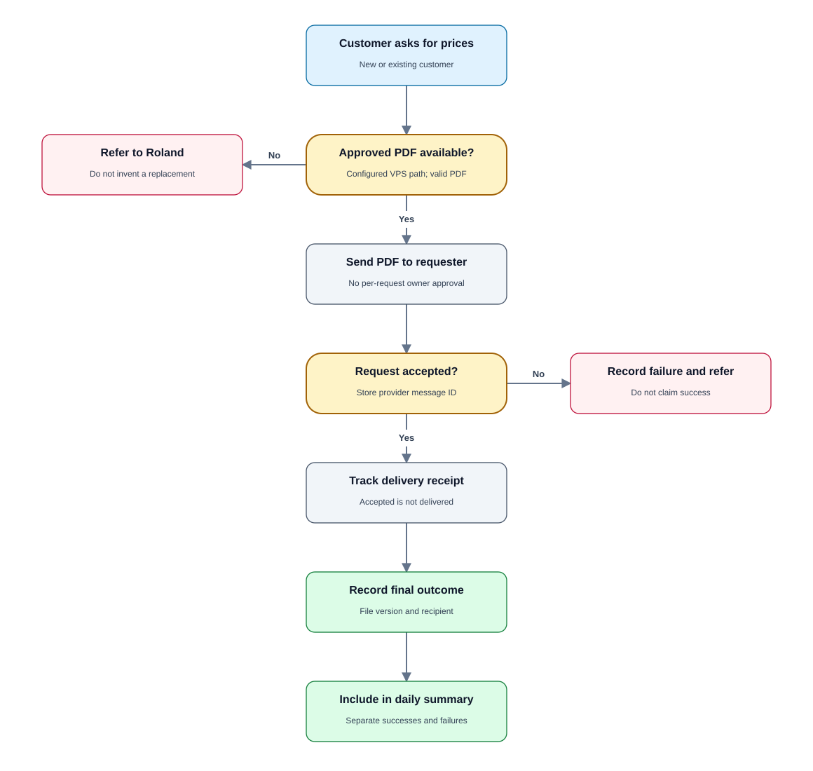
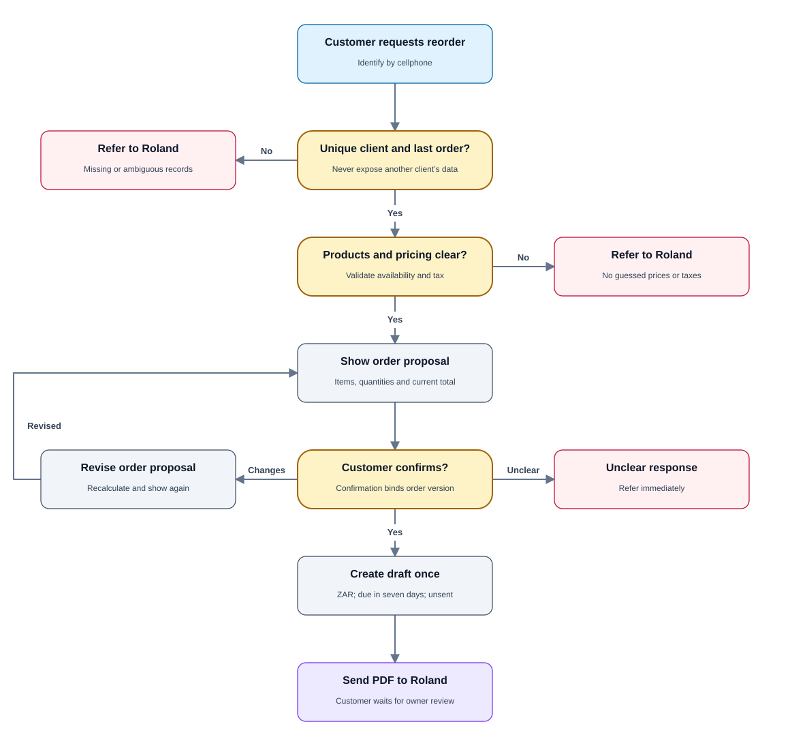
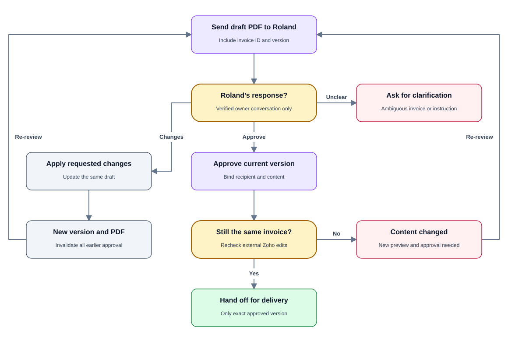
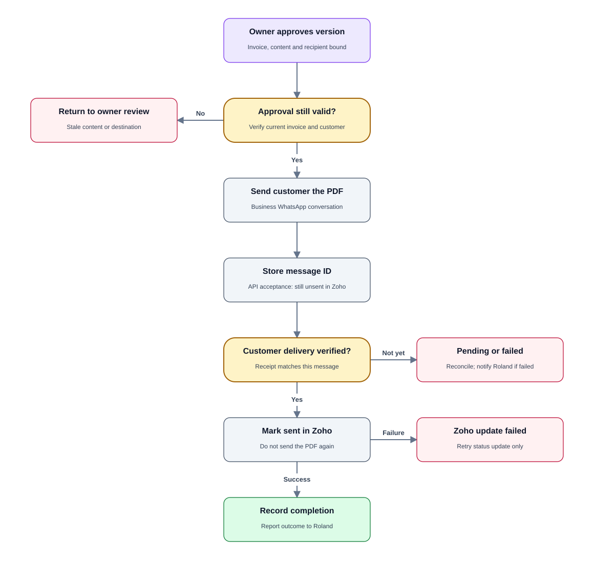
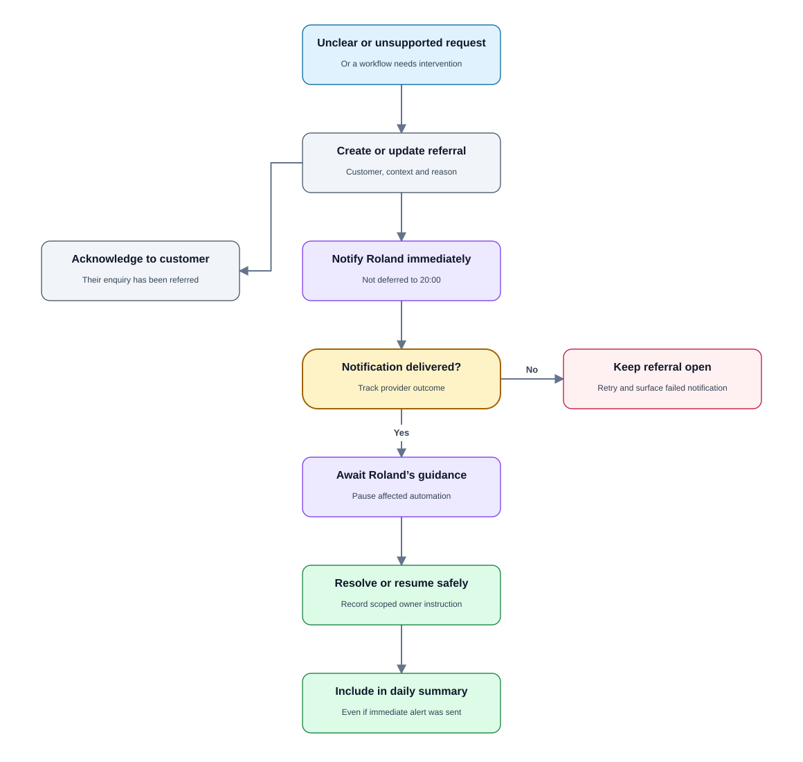
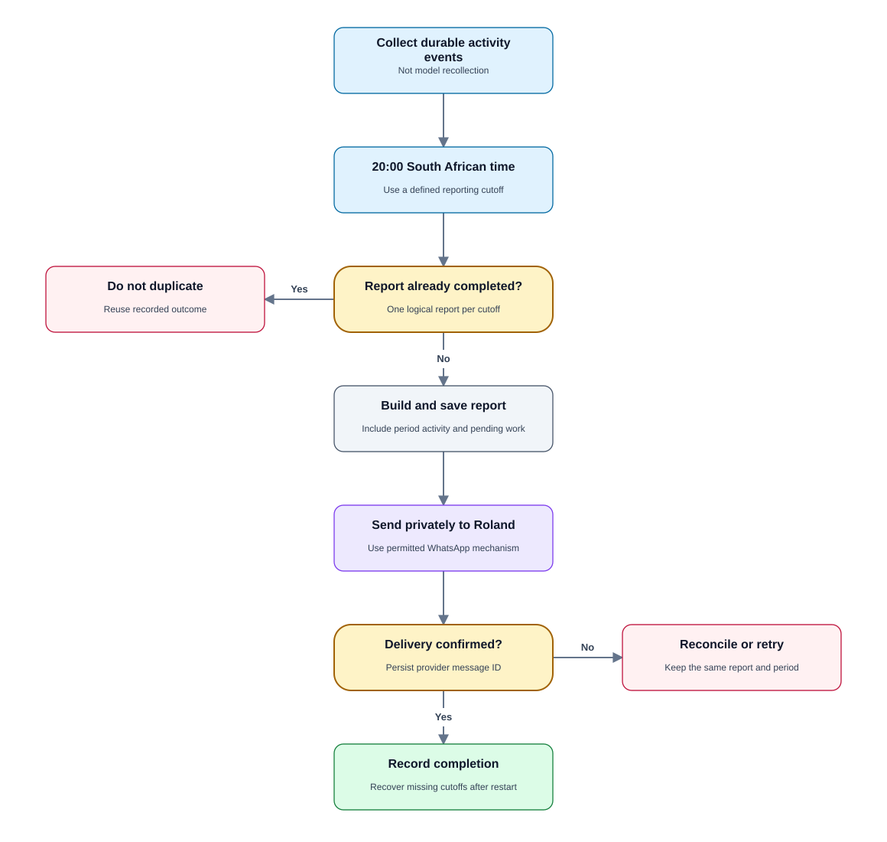

FLOW 01
Message routing & access
Separate your owner controls from customer conversations before any tools run.
Only a verified message from Roland’s number gets owner permissions.

FLOW 02
New customer enquiries
Collect a name without automatically creating a Zoho client or taking an order.
A missing Zoho match is not proof of a new identity. Refer uncertain matches.

FLOW 03
Automatic price-list delivery
Send the existing approved PDF from the VPS to the person who requests it.
Routine successful requests go into the daily summary, not an immediate owner alert.

FLOW 04
Existing customer reorder
Review the last order with current prices, obtain customer confirmation, then create a draft.
The customer confirms draft creation only. They do not authorize invoice delivery.

FLOW 05
Owner review & revisions
Keep the invoice unsent while Roland reviews and updates the draft.
Every revision invalidates previous approval. Sending a preview to Roland never marks it sent.

FLOW 06
Approved customer delivery
Deliver the approved invoice, then update Zoho only after verified customer delivery.
An API acceptance or a delivery receipt for Roland’s preview does not count as customer delivery.

FLOW 07
Immediate referrals
Escalate unclear or unsupported requests without waiting for the nightly summary.
Pause the affected action; never invent an answer or promise Roland has read the referral.

FLOW 08
Daily summary · 20:00 SA time
Give Roland a consolidated view of enquiries, reorders, pending reviews and issues.
Use Africa/Johannesburg explicitly. Immediate referrals remain a separate real-time flow.
